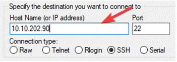
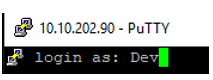
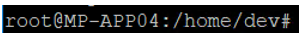
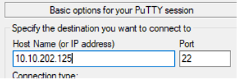
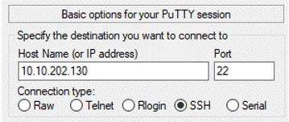

Linux Updaten
Inhoudsopgave
Inleiding
Deze handleiding is de nieuwe standaard om Linux en DirectAdmin te updaten. De handleiding is geupdate naar 2021 standaard en bevat ook directe updates.
Binnen Montapacking draaien de volgende servers. Sommige servers liggen niet in ons beheer. De onderstaande server moeten wel door ons geüpdatet worden.
-MP-VOIP01
-MP-VOIP02
-mp-rabbitmq01
-mp-rabbitmq02
-mp-rabbitmq03
-mp-rabbitmq10
-MP-CBD01
-MP-CDF01
-MP-CDF02
-MP-TEST05
-MP-STA01
-MP-STA02
Voor de volgende servers kan het updaten gevraagd worden aan Aspect-ICT.
-MP-VCENTER21
MP-RabbitMQ (4 stuks)
Medio augustus 2023 wordt er een nieuw RabbitMQ-cluster gebouwd, tot dat gereed is geen updates uitvoeren aan onderstaande Rabbit-systemen svp.
Open via een MGMT-Server de applicatie Putty. De hostname van bijvoorbeeld de MP-RABBITMQ03 is 10.10.202.90

Na dit ingevuld te hebben druk je op Open.
Login met IT Beheer het wachtwoord hiervan vind je in passwordstate

Om te updaten moeten we van User wisselen. Dit doe je met sudo su daarna geef je nog een keer het wachtwoord van IT Beheer.

apt-get update
apt-get upgrade
apt-get clean
Herhaal dit voor alle RabbitMQ-servers. Als een RabbitMQ-server uit het cluster vraagt om een herstart dan kan dat uitgevoerd worden, als het maar per server uitgevoerd wordt.
MP-VOIP01
Open via een MGMT-Server de applicatie Putty. De hostname is bij deze servers het IP-adres voor de MP-VOIP01 is dit 10.10.202.125.

Na dit ingevuld te hebben druk je op Open.
Login met root het wachtwoord hiervan vind je in passwordstate.
In Passwordstate heet de entry "Voip Server 3CX intern (ook MP-VOIP01 en MP-VOIP02 in notes)"
apt-get update
apt-get upgrade
apt-get clean
MP-VOIP02

Open via een MGMT-Server de applicatie Putty. De hostname is bij deze servers het IP-adres voor de MP-VOIP02 is dit 10.10.202.130.

Na dit ingevuld te hebben druk je op Open.
Login met root het wachtwoord hiervan vind je in passwordstate
apt-get update
apt-get upgrade
apt-get clean
Diverse servers
MP-CBD01 10.10.202.49 (Reboot mag overdag)
MP-CDF01 10.10.202.24 (Reboot mag overdag)
MP-CDF02 192.168.201.13 (Reboot mag overdag)
MP-TEST05 10.10.202.47 (Reboot mag overdag)
MP-STA01 10.10.202.43 Updaten wordt uitgevoerd door Hunt & Hackett
MP-STA02 10.10.202.30 Updaten wordt uitgevoerd door Hunt & Hackett
Ook hierbij werkt Putty het handigst.
Om te updaten moeten we van user wisselen. Dit doe je met sudo su
Daarna geef je nog een keer het wachtwoord van root.
apt-get update
apt-get upgrade
apt-get clean
Dit kan ook in één keer uitgevoerd worden door het uitvoeren van een updatescript waarin bovenstaande commando's achter elkaar staan met wat switches erachter:
bash -x updatescript.sh
Inhoud updatescript.sh :
#!/bin/bash
sudo apt-get update
sudo apt-get upgrade -y
sudo apt-get clean -y
sudo apt-get autoremove -y